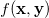
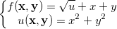
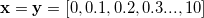

Beispiel
In diesem Tutorial haben wir eine 2D-Funktion  und erstellen ein Konturdiagramm daraus.
-
- 
während 
Schritte:
- Klicken Sie auf die Schaltfläche Neue Matrix
 , um eine neue Matrix zu erzeugen.
, um eine neue Matrix zu erzeugen. - Um die Dimensionen festzulegen, wählen Sie Matrix: Dimensionen/Beschriftungen festlegen im Origin-Menü und setzen Sie die Werte wie im Bild unten. Klicken Sie dann zum Anwenden auf OK:
- Als Nächstes werden Werte für das aktive Matrixobjekt gesetzt, damit es
=x^2+y^2") ist.
ist.
- Wählen Sie Matrix: Werte setzen im Origin-Menü. Sie können in dem geöffneten Dialog für Mat(1) Werte setzen.
-
x^2+y^2
- Jetzt fügen Sie ein zusätzliches Matrixobjekt hinzu, um als
=\sqrt{u}+x+y") zu agieren, wodurch Mat(1) in der Berechnung aufgerufen wird.
zu agieren, wodurch Mat(1) in der Berechnung aufgerufen wird.
- Klicken Sie auf die Schaltfläche D
 oben links von der Matrix und wählen Sie Hinzufügen im Kontextmenü.
oben links von der Matrix und wählen Sie Hinzufügen im Kontextmenü. - Klicken Sie erneut auf die Schaltfläche D und wählen Sie 2, um das 2. Matrixobjekt zu aktivieren.
- Während das 2. Matrixobjekt aktiv ist, setzen Sie die Werte für Mat(2), indem Sie die Formel unten verwenden:
-
sqrt(Mat(1))+x+y
- Klicken Sie auf die Schaltfläche D
- Schließlich können Sie ein Konturdiagramm von Mat(2) zeichnen, das dem folgenden entspricht: